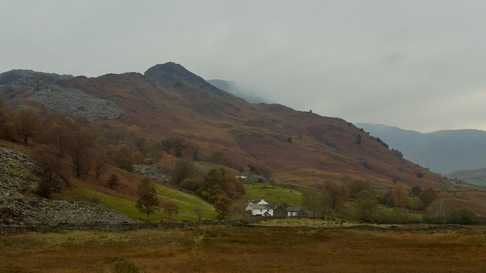

The Environment Act 2021 set out a number of legally binding targets to halt species decline, restore degraded habitats, rejuvenate rivers and improve biodiversity by 2030. However, according to a new assessment from the Office for Environmental Protection (OEP), the UK is now on course to miss the majority of those commitments. Seven out of ten are unlikely to be met unless urgent action is taken.
These targets were written into law as a response to decades of nature loss, climate breakdown, and public demand for action. If they are missed we risk losing more species, allowing ecosystems to degrade further, and placing additional strain on our communities, especially those already facing environmental injustice.
The OEP’s analysis showed that while some areas like clean air and reductions in certain hazards are partially on course, crucial goals such as biodiversity net gain, habitat restoration and water quality improvements are falling short. The reasons for this include delayed implementation, insufficient funding, and conflicting policy priorities that still favour development and short‑term economic gains over ecological resilience. At the same time, other government proposals, such as planning reforms that risk opening up protected sites to new development pressures, could further undermine nature at the very time when ecosystems need strengthening.
Strong laws and regulations protecting nature are a foundation for public wellbeing, climate resilience and a fair economy. We need to use them to combine a number of different approaches. Firstly we need dedicated, ring‑fenced funding for habitat restoration. We also need to give people a sense of ownership and this can be done using a number of methods, including rewilding and community conservation projects via community trusts and councils. Further community ‘buy in’ can be encouraged by the creation of ‘green jobs’, investing in nature protection to create employment in regions hit by industrial decline, while improving air, water and green spaces for marginalised communities.
Years of underfunding, lax enforcement and prioritising short‑term economic activity over ecological health are catching up with both the government and the nation. While markets can drive growth, they don’t protect hedgehogs, rivers and ancient woodlands unless the state backs them up with proper regulation and investment. Free‑market approaches have too often treated environmental rules as inconvenient constraints rather than essential public goods, leaving nature struggling while economic priorities dominate.
Legally binding targets were meant to be a turning point for nature in the UK, but without the resources, enforcement and political will to match, they risk becoming empty promises. Protecting nature is about real policies that deliver measurable outcomes for ecosystems and the people who depend on them. The next few years are critical: either we take robust action, or Britain’s natural heritage will continue to slip away.